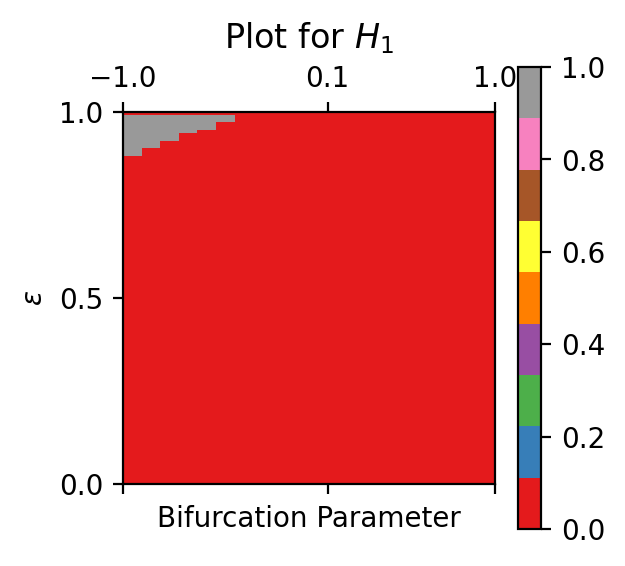

2.3.6. Stochastic P-Bifurcation Detection
Stochastic P-bifurcations are points of topological changes in the joint probability density function (PDF) of a stochastic system. Please cite the papers “A topological framework for identifying phenomenological bifurcations in stochastic dynamical systems” and “Topological Detection of Phenomenological Bifurcations with Unreliable Kernel Densities” when using these functions. These modules can be used to detect P-bifurcation given
2.3.6.1. Analytical Density
Given the analytical PDFs, the homological bifurcation plot can be generated with the module below
- teaspoon.SP.StochasticP.analytical_homological_bifurcation_plot(PDFs, bifurcation_parameters, dimensions=[0, 1], filter=0.02, maxEps=1, numStops=10, plotting=True)[source]
Computes the homological bifurcation plot given a list of analytically generated PDFs
- Parameters:
(list) (PDFs) – A python list of numpy arrays of PDFs
(array) (bifurcation_parameters) – Array of bifurcation parameters against the PDFs
(Optional[list]) (dimensions) – List of homology dimensions to make plots for
(Optional[float]) (maxEps) – Persistence values above which classes are kept; default: 0.02
(Optional[float]) – Maximum value of threshold; default: 1
(Optional[int]) (numStops) – Number of points between 0 and maxEps; default: 10
(Optional[bool]) (plotting) – Plots the homological plot for the given diagrams; default: True
- Returns:
2D homological bifurcation plot(s)
2.3.6.1.1. Example
The following example plots an analytical bifurcation plot for a set of PDFs where the system shifts from a monostability to a limit cycle:
import numpy as np
from teaspoon.SP.StochasticP import analytical_homological_bifurcation_plot
X, Y = np.meshgrid(np.linspace(-3,3,100), np.linspace(-3,3,100))
factors = np.linspace(-1,1,20)
PDFs = []
for h in factors:
p = np.exp(-0.5*((X**2+Y**2)**2 + h*(X**2 + Y**2)))
PDFs.append(p)
M = analytical_homological_bifurcation_plot(PDFs, bifurcation_parameters=factors, dimensions=[1], filter=0.02, maxEps=1, numStops=100, plotting=True)
The output for this example is
{kind=link}